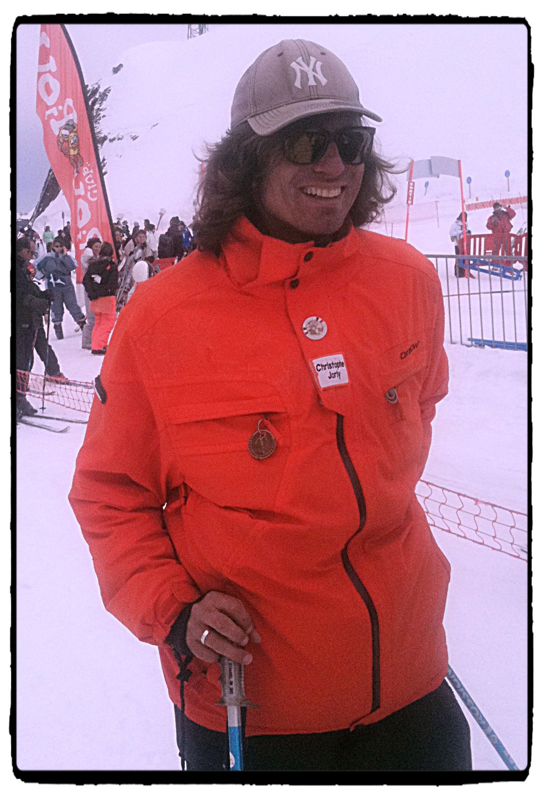

Christophe JORLY, diplômé d'état de ski, de snowboard et de surf, est originaire d'une vieille famille de Cauterets.
Fort de 25 années d'expérience dans diverses stations de ski françaises, il vous offre un service de qualité alliant bonne humeur et sécurité au travers d'un mode d'enseignement performant.
Établissement déclaré au Ministère de la Jeunesse et des Sports - N° ET000367
Médailles et carnets de tests en fin de stage